[Story]Emil Chronicle Online [Update Saga 13 แต่ 12 หาย 55+]
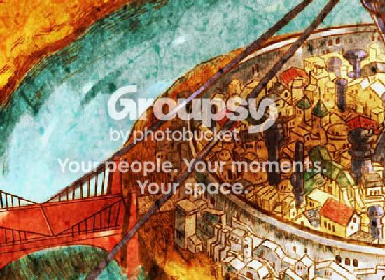
Saga 0
Rumble of Acronia
เวทีแห่งนี้คือ ดินแดนที่ชื่อว่า Acronia
ที่นั่น มีอารยธรรมที่ก่อตัวขึ้นอย่างรวดเร็ว แต่ว่า
กลับมีเหตุการณ์ที่ทำให้ดินแดนแห่งนี้ล่มสลายลงไป
กาลเวลาผ่านไป....
ยังมีชีวิตอยู่! เหล่าสิ่งมีชีวิตที่ยังอยู่ในดินแดนแห่งนี้ กับสิ่งปลูกสร้างลึกลับต่างๆ,
ซากปรักหักพังของแต่ละแห่งในโลก
“เครื่องมือเครื่องใช้” ที่เหล่าบรรพบุรุษได้สร้างไว้ ถูกค้นพบขึ้น
สิ่งมีชีวิตบนโลกใบนี้
เหล่ามนุษย์ ถูกเรียกจากชนเผ่าอื่นๆว่า "พลเมืองของ Emil"
ส่วนผู้ที่มีวงแหวนแห่งแสงพร้อมกับปีกสีขาว นั้นคือ "Titania"
และเหล่าสิ่งมีชีวิตที่มีหางและปีกสีดำถูกเรียกว่า "Dominion"
แล้วก็, เหล่ากลุ่มคนจำนวนน้อยที่เรียกตนเองว่า "ชนเผ่าโบราณ"...
ชนเผ่าโบราณนั้น ได้ชื่อว่าเป็นพวกที่สามารถดำรงชีวิตบนแผ่นดินนี้ได้ มาตั้งแต่โบราณ
พร้อมๆกับอารยธรรมของดินแดนแห่งนี้
แต่กล่าวกันว่า พวกเขาได้สูญหายไปหมดแล้ว
Titania กับ Dominion นั้น, เพื่อจุดมุ่งหมายบางอย่างที่แตกต่างกัน
จึงได้ปรากฏตัวขึ้นบนดินแดนของมนุษย์
เพราะว่ากันว่า แท้จริงแล้ว โลกก็เป็นส่วนหนึ่งของสวรรค์และใต้พิภพมาแต่โบราณแล้ว
"ชนเผ่าโบราณ" ปรากฏตัวขึ้นอีกครั้ง
สาเหตุในการใช้ชีวิตร่วมกับ Titania, Dominion และเหล่าผู้คนนั้น
เพื่ออะไรกันแน่?
ตอนนี้จังหวะหัวใจได้กังวาลขึ้นแล้วที่ Acronia
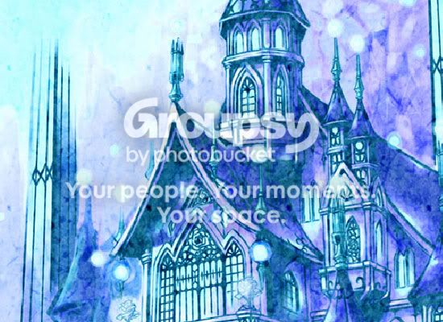
Saga 1
Northern and Infinite Corridor
เกาะทางเหนือนั้นตั้งอยู่ไกลออกไปทางด้านเหนือของพื้นที่ Acronia
เป็นที่รู้กันว่าที่ดินแดนแห่งเวทมนต์ ถูกปกครองด้วยราชินีของที่นั่น
เป็นเวลาสองสามร้อยปีแล้ว
ราชินีนั้นปรากฏตัวแค่ในรูปของวิญญาณเท่านั้น
และไม่รู้ว่าตัวจริงของเธอนั้นอยู่แห่งใด
วิญญาณที่ดินแดนนี้เทิดทูนเวทมนต์
มีอะไรอยู่เบื้องหลังในเรื่องราวน่าสงสัยนี้?
และสถานที่ผจญภัยแหง่ใหม่ได้ปรากฏขึ้นมีชื่อเรียกว่าโบราณสถาน
โบราณสถานที่ผ่านกาลเวลามาอย่างยาวนาน
ที่ทุกๆคนรอคอยที่จะค้นหาข้างในนั้นและพบกับสิ่งที่เกิดขึ้น
สิ่งก่อสร้างที่อยู่ชั้นล่างของ Acropolis City
สถานที่ที่เรียกว่า Arena ที่ยังเหลืออยู่อย่างสงบในตอนนี้
ได้ถูกเปิดเผยขึ้นมา
การผจญภัยเพื่อเรียนรู้โลกแห่งใหม่
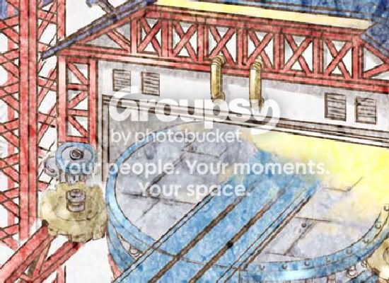
Saga 2
The one to Run in the Dawn
ทวีป Acronia ครั้งหนึ่งซึ่งเคยล่มสลาย
ผู้คนในเมืองได้พยายามจะฟื้นฟูให้กลับมาเหมือนเดิมอีกครั้ง
ซึ่งก็เกิดการขัดแย้งในเรื่องการค้าขาย
ปัจจุบันทั้ง 4 เมืองได้ถูกดูแลกิจการด้วยเมือง 2 เมือง
อย่างไรก็ตามผู้คนก็ไม่ได้สามัคคีกันอย่างแท้จริง
โลกที่กว้างใหญ่ก็ยังมีหลายสิ่งที่หลงเหลืออยู่และถูกปิดบังไว้
นักผจญภัยได้ตัดสินใจเดินทางไปยังเมืองแห่งใหม่
เพื่อการผจญภัยตามที่ใจต้องการ
ยุคใหม่ได้เข้ามาเพื่อความสมดุลในโลกนี้
เกาะเหมืองแร่ดินแดนที่มีภูเขาไฟซึ่งอยู่ทางใต้ของ Acronia
ที่มีชื่อว่า"South Iron"
การดำรงชีวิตของทหารที่แข็งแกร่งเพื่อต่อต้านกับการแก่งแย่งทรัพยากร
จักรพรรดิของโลกที่มีกองกำลังที่แข็งแกร่งที่สุด
"ไฟ" แสงที่เป็นเหมือนสัญลักษณ์แห่งความหวังในวันข้างหน้า
"ไฟ" แผดเผาเหมือนสัญลักษณ์แห่งการทำลายทุกๆสิ่ง
ผู้คนที่อาศัยในดินแดนแห่งไฟและเหล็ก
ดินแดนที่อยู่เบื้องล่างของ Acronia คุณจะได้พบกับการผจญภัยที่นั่น
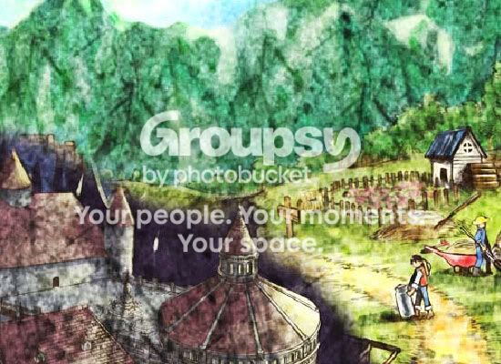
Saga 3
Land of Harvest and Dark Castle
ดินแดนที่เฟื่องฟูในทางด้านเกษตรกรรมอยู่ไกลออกไปทางด้านตะวันออก
ที่มีชื่อว่า"Fareast"
เป็นเมืองที่มีอากาศแจ่มใสและเป็นดินแดนแห่งความร่ำรวย
จากการล่มสลายของบรรพบุรุษจึงทำให้มีบทบาททางด้านอาหารของโลกนี้
เป็นข่าวดีที่อาหารที่เป็นที่ต้องการต่อโลกนี้ไม่ได้รับผลกระทบการสงครามโดยตรง
อย่างไรก็ตามเมล็ดพืชแห่งความชั่วร้ายบนโลกนี้ก็กำลังหลับใหลอยู่
เกาะทางเหนือของดินแดนใหม่แหล่งที่อยู่ของเหล่ากองโจร
ปราสาททางใต้ที่เป็นดินแดนแห่งความตาย
ป่าที่มีสัตว์ประหลาดที่ชั่วร้ายอยู่อย่างหนาแน่นทั่วทั้งป่า
ถึงผู้ที่เดินทางผ่านมา คุณจะพบกับผู้คนที่สงบเงียบ
การผจญภัยแห่งชีวิต เรียกหาสัตว์ประหลาดแห่งความตาย
ตอนนี้ได้ปูทางเพื่อไปสู่ Fareast
"ชีวิต" เพื่อให้โลกหมุนต่อไป
"ความตาย"ที่พบได้ในปราสาท...
การผจญภัยในเมืองที่มีสองอย่างที่ตรงกันข้าม
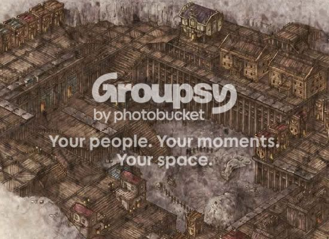
Saga 4
Wind from Rising Nation
เกาะที่ห่างไกลในตะวันตก "Morg"
เมืองที่มีเหมืองแร่เพียงที่เดียวในโลกที่มีข้อบกพร่องในเรื่องของทรัพยากรโคลน
เป็นเมืองที่มีความสัมพันธ์กับเมือง South Iron ซึ่งประกาศอิสระภาพไม่นานมานี้
การพ่นไอน้ำของเมืองนี้แสดงถึงความซับซ้อนของเมือง
หอประภาคารทางตะวันตกเฉียงใต้เป็นสถานที่ที่มีสิ่งลึกลับที่ซ่อนบางอย่างเกี่ยวกับอารายธรรมในสมัยก่อนไว้
เมืองที่ 4 ในโลกที่แก่งแย่งอำนาจ "Morg"
การผจญภัยในดินแดนใหม่ๆด้วยความสามารถใหม่ๆ
การผจญภัยที่ส่งผลต่อดินแดน Acronia
จากดินแดนแห่งความหวังและความสับสน สายลมแห่งใหม่ได้พัดผ่านมาแล้ว
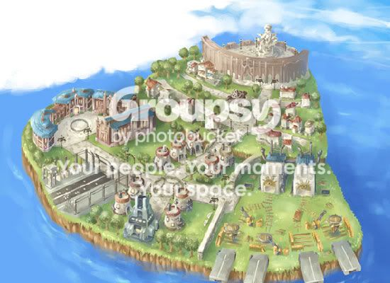
Saga 5
Island of Creation and Craft
เมืองแห่งเทคโนโลยี Tonka City เป็นเมืองที่ตั้งอยู่บนเกาะ
ซึ่งอยู่ทางตะวันออกเฉียงใต้ของทวีป Acronia
ซึ่งในการเดินทางนั้นจะต้องนั่งเรือจากเมือง Iron South ที่อยู่ทางใต้ข้ามไป
เมือง Tonka นั้นจะเต็มไปด้วยเทคโนโลยีใหม่ๆมากมายที่ไม่เคยเห็นใน Acronia มาก่อน
จึงเป็นศูนย์รวมของเหล่าอาชีพ Machinery ที่แสวงหาเทคโนโลยีใหม่ๆ
นอกจากนี้ยังเป็นเมืองแห่งอาชีพ Marionette ซึ่งที่นี่เราจะพบกับ Marionette มากหน้าหลายตาที่ชาวเมืองนี้ใช้มันเป็นส่วน หนึ่งของการดำรงชีวิต
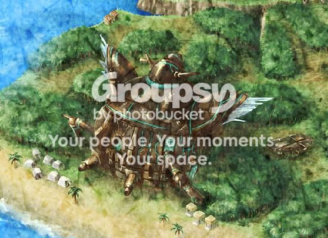
Saga 6
Door of Neogenesis
เกาะใหม่ที่ถูกค้นพบ ซึ่งอยู่กลางทะเลทางตะวันออกเฉียงใต้ของทวีป Acronia มีชื่อว่าเกาะ Mai Mai
ที่เกาะแห่งนี้จะมีภูมิประเทศเป็นแบบป่าไม้เขตร้อน ซึ่งจะมีต้นไม้ Baobub ต้นใหญ่
ซึ่งเติบโตมาตั้งแต่ครั้งอดีตกาลขึ้นอยู่เต็มไปหมด
ซึ่งต้นไม้ Baobub นี้เป็นวัตถุดิบที่สำคัญใน การนำไปสร้างเป็นฐานของสวนลอยฟ้า Flying Garden
และจากการที่มีผู้คนมาตัดต้น Baobub ไปมากขึ้น ทำให้ป่าในเกาะ Mai Mai นั้นเริ่มลดความหนาแน่นลง
จนกระทั่งได้ค้นพบกับซากโบราณประหลาดอย่างหนึ่ง ซึ่งตั้งอยู่ใจกลางเกาะ
จากการค้นพบนี้เป็นการค้นพบอันยิ่งใหญ่ของผู้คนบนโลกแห่ง Emil เลยก็ว่าได้
เพราะมันคือซากอารยธรรมโบราณของ Mai Mai ที่สาบสูญไป
ซึ่งครั้งหนึ่งอารยธรรมของ Mai Mai นั้นเคยรุ่งเรืองมากมาก่อน
เหล่าบรรดาทหารและนักสำรวจจากทุกสารทิศ ต่างพากันแห่มาแย่งกันสำรวจซากโบราณนี้
ไม่ว่าจะเป็นทหารจากทั้ง 4 ทิศของ Acronia และนักผจญภัยไร้สังกัด
ต่างก็มาตั้งเต็นท์ล้อมรอบซากโบราณแห่งนี้เต็มไปหมด
แต่ว่า ด้วยวัตถุดิบที่นำมาสร้างซากโบราณแห่งนี้นั้นสร้างมาจากวัตถุที่แข็งแกร่ง และทนทานอย่างเซรามิคและไททาเนียม
พวกทหารและนักสำรวจต่างก็ทำทุกวิธีทาง แต่ก็ไม่สามารถหาทางเข้าไปข้างในได้เลย
ซึ่งแต่ละฝ่าย ทหารแต่ละทิศต่างก็พากันค้นหาหนทางเพื่อตัดหน้าฝ่ายอื่นเข้าไปสำรวจ
และคุณก็จะร่วมเป็นส่วนหนึ่งของการสำรวจแห่งประวัติศาสตร์ครั้งนี้...
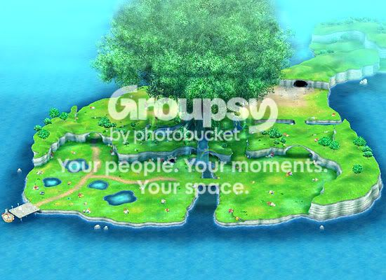
Saga 7
Faraway to Waterlayer
เมื่อการสำรวจอารยธรรมที่หลงเหลือบนโลกของ Emil สิ้นสุดลง
เหล่าผู้คนในยุคใหม่ก็เริ่มที่จะหาหนทางสำรวจอารยธรรมที่นอกเหนือจากที่มีอยู่บนโลกของ Emil
นั่นคือโลกแห่งสวรรค์ของ Titania และโลกใต้พิภพของ Dominion
และสิ่งใหม่ที่ถูกค้นพบใน Saga7 ก็คือหอคอยปริศนา Sky Tower ที่อยู่ทางเหนือของเมือง Morg
เป็นสิ่งก่อสร้างสุดท้ายที่ยังไม่ได้สำรวจ เนื่องจากประตูของหอคอยถูกปิดตายไว้นับพันปี ไม่มีทีท่าว่าจะเปิดออกได้
แต่ว่าหลังจากค้นพบกุญแจจากซากโบราณสถาน “Mai Mai”
ความลึกลับของหอคอยปริศนานี้ก็กำลังจะถูกเปิดออก
และมันเป็นเส้นทางเดียวในตอนนี้ที่ใช้เดินทางไปสู่โลกแห่งไททาเนีย
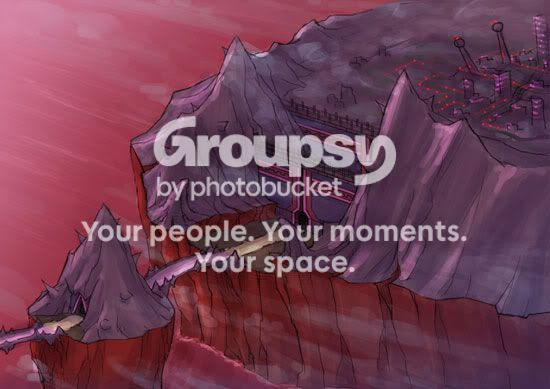
Saga 8
Song for Battle field
โลกแห่ง Dominion เป็นโลกที่ Dominion ทุกคนเกิดขึ้นมา
เป็นดินแดนแห่งการต่อสู้ที่ทุกคนในโลกแห่งนี้จะถูกปลุกจิตวิญาณการต่อสู้ให้ลุกโชนขึ้นดุจสัญชาติญาณ
โลกของ Dominion นี้ ไม่ได้เป้นโลกที่อยู่ใกล้ชิดติดกันเฉกเช่นโลกของ Emil และ Titania แต่เป็นโลกที่แยกออกมายังอีกมิติหนึ่ง
ทว่าในช่วงที่เกิดมหาสงครามขึ้นในยุคที่เครื่องจักรเฟื่องฟู
พวก DEM หรือจักรกลสังหารได้รุกรานเข้ามายังดินแดนแห่งนี้ด้วย และแผ่พลังอำนาจไปทั่ว
ส่งผลให้โลกแห่งนี้ยังคงสภาพเสื่อมโทรมจนถึงปัจจุบัน
โลกแห่ง Dominion นี้จึงเปรียบเหมือนกับโลกอีกโลกหนึ่ง
ซึ่งการจะเข้ามาได้นั้นต้องทำการ "โยกย้ายวิญญาณ" ข้ามมิติจึงจะสามารถเดินทางเข้ามาได้
พูดง่ายคือถ้าต้องการมาโลกนี้ก็เหมือนคุณเกิดใหม่กันเลย
เริ่มต้นชีวิตใหม่ กับดินแดนใหม่ มอนสเตอร์ใหม่
สถานที่สำคัญของโลกแห่ง Dominion ป้อมปราการสุดท้าย West Fort เชื่อมต่อไปยังโลกแห่ง Dominion
ซึ่งเมื่อครั้งอดีตพวก DEM ใช้รุกรานที่นี่และใช้เป็นที่เดินทางลงไปยังโลกของ Dominion
และทำการยึดครองโลก Dominion เอาไว้
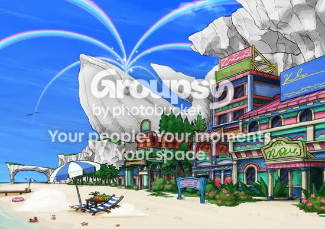
Saga 9
Eternal Paradise
เมืองที่ห่างออกไปจากเมืองปกติ...[ECO Town]
อยู่ในโลกของไททาเนีย และก็ไม่อยู่ในโลกของไททาเนียด้วย O_o!?
ไม่มีใครทราบที่อยู่ เมืองนี้ผู้คนลืมเรื่องการสู้รบ และใช้ชีวิตสนุกสนาน
เมืองที่มีแสงแดดแผดเผา หาดทรายสีขาว บ่อน้ำพุร้อน ที่เล่นสนุกสนาน
ที่นี่เป็นเมืองที่ไร้การต่อสู้ บางทีเพื่อค้นหาความสงุบ
ผู้พจรญพัยก็มาจากโลกโดมิบ้าง ผ่านจากสะพานสายรุ้งมาสู่โลกนี้
[ECO Town]คืออะไรกัน？
ความลับที่ซ่อนอยู่ในหินรูปปลาวาฬ นั้นคืออะไรกัน？
ใน ECO Town มีเรื่องราวหลากหลายซ่อนอยู่ และเกิดเรื่องราวต่างๆหลายที่
Titania Emil Dominion ต่างกันเริ่มต้นเดินทางตามเส้นทางของพวกเขา
ซึ่งหวังว่าจะได้มาพบเส้นทางเดียวกันในวันข้างหน้า
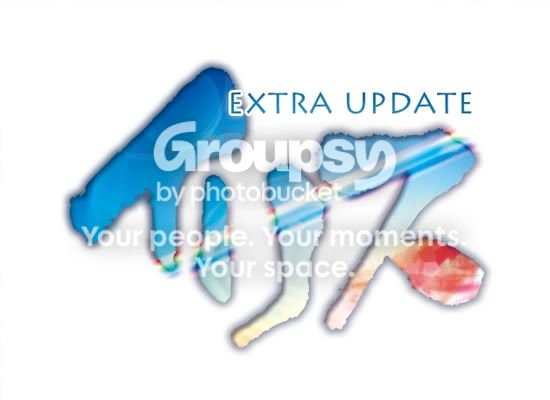
Iris
Extra Update : Iris
ณ ใต้ดินอโครโพลิส ได้พบเอกสารเก่าแก่จากสมัยสงคราม
เอกสารฉบับนี้ได้ถูกเรียกว่า Iris Report
จากชื่อนักวิชาการใน Iris Report นั้นได้มีเรื่องราวของวิธีการนำ "พลังของความรู้สึกมาเปลี่ยนเป็นคริสตัล"
"ความรู้สึกที่ห่วง" หรือ "คิดถึงผู้อื่น" หรือ "ความทรงจำ" นั้นบางครั้งก็จะกลายเป็นพลังให้กับผู้อื่นได้
ยกตัวอย่างเช่น นักเดินทางที่พบ เศษเสี้ยวของดวงใจ เป็นครั้งคราวนั้น
มันก็คือ คริสตัลจากจิตใจมนุษย์นั่นเอง
หน้ากากของนักดาบใน Mai Mai นั้นได้ถูกกล่าวว่ามีความทนงจำ และมีความคิดเป็นของตัวเอง
แต่ก็เป็นเพียงแค่เรื่องราวเล่าขานมา ยังไม่ได้มีใครพิสูจให้รู้ความจริงได้
การค้นคว้านี้ ในสมัยนั้นก็ยังไม่ได้ดำเนินการทำจริง และเพราะสงครามทำให้เอกสารหายไปบ้าง จึงไม่มีใครได้สืบทอดทำต่อ
[พลังแห่งความตั้งใจ] นั้นยังไม่มีใครได้ทำให้เป็นจริงขึ้นมาได้
แต่จากเอกสารนั้น ก็ได้ทำการสกัดเป็นคริสตัล และเพิ่มพลังให้กับสิ่งของได้ถูกคิดค้นขึ้นมา
วิธีนี้ทำเหมือนการสร้าง Golem ใส่พลังมันให้กับสิ่งของ และต้องทำให้สิ่งของรับพลังนั้นได้ด้วย
เสริมให้กับสิ่งของแล้ว ก็ใส่ คริสตัลของ ความคิด ? จิต ? ความตั้งใจ ? ลงไป
ส่วนมากนั้นมาเป็นรูปแบบการ์ด จึงถูกเรียกว่า Iris Card
Iris System จึงได้แพร่กระจายไปทั่วโลก
จากนี้ไป พลังนี้จะค้นพบนี้ จะทำให้โลกนี้เป็นอย่างไรต่อไป
ณ ตอนนี้ยังไม่มีใครรู้
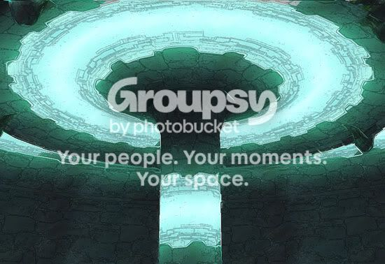
Saga 10
Pseudo gods and memory of machines Time to Rouse
คลื่นลูกน้อยๆได้เกิดขึ้นโดยใครซักคนที่กำลังผจญภัย
ในโลกแห่งคลื่นลูกใหญ่สามลูกที่ถูกครอบงำไปด้วยการทำลายล้าง
การต่อต้านของการต่อสู้เพื่อขัดขวาง ในที่สุดก็ได้เริ่มต้นขึ้นแล้ว
ทางผ่านใต้ดินที่นำไปสู่นครอโครโพลิสที่เป็นความลับในอดีต
เขาวงกตที่มีคู่ต่อสู้ที่ไม่เคยเจอมาก่อนและมีมากมายหลายชั้น
จากดินที่กลายไปเป็นหินเป็นหนทางสู่โลหะและหิน
พวกเราได้เริ่มเข้าใกล้สู่ใจกลางแห่งการผจญภัยมากขึ้นทีละนิด
ในขณะเดียวกันนั้นที่แห่งหนึ่งของนครอโครโพลิสในดินแดนโดมิเนียนที่เงียบสงบ
และทุกเหตุการณ์สำคัญนั้น ได้เกิดผลของต้นไม้ที่ร่วงลงสู่นครอโครโพลิสแล้ว
เผ่าหุ่นยนต์ผู้ที่ไม่รุกรานผู้ใด ที่มีพลังแต่ดั้งเดิมที่เรียกว่า "จิตวิญญาณ"
Dem ผู้ที่แปรพักตร์จากอีกฝ่ายได้กำเนิดขึ้นแล้วในตอนนี้
การผสมผสานในเครื่องยนต์กลไกอย่างละเอียดที่มีข้อบกพร่องน้อยมากๆ
มันคือ "สงคราม" แต่สำหรับท้องทะเลที่กว้างใหญ่ มันอาจจะเป็นบางสิ่งที่เล็กน้อยเหมือนอย่างก้อนหิน
แต่ถึงกระนั้น มันก็จะไม่ถูกลืม เป็นก้อนหินที่ตกลงไปในน้ำที่จะทำให้เกิดการกระเพื่อม
แสดงให้เห็นถึงสัญญาณแห่งการประนีประนอมในสงครามวังวนแห่งความเกลียดชัง หรือจะเป็นผู้ที่ทำให้มันดำเนินต่อไป?
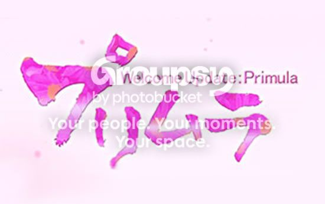
Primula
Welcome Update : Primula
ในดินแดนแห่งไททาเนีย
เหล่าชนเผ่าไททาเนียได้ค้นพบ Primula
ซึ่งเป็นจิตวิญญาณและนางฟ้าทั่วโลกที่มีความรอบรู้เรื่องข้อมูลข่าวสาร
และ Primula ได้ยินมาว่ามีนักผจญภัยหลายคนได้หายสาบสูญไป
ไม่มีใครต้องโดดเดี่ยวในยามที่ต้องการ
คำแนะนำที่จะช่วยนักผจญภัยได้อย่างเต็มที่
พวกเราทุกคนจะได้ก้าวต่อไป
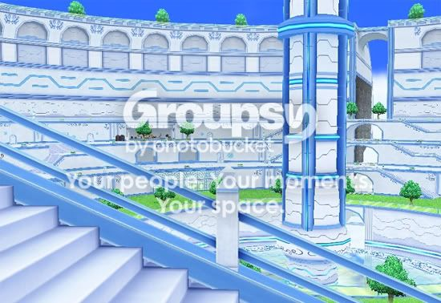
Saga 11
Time to Rouse
[หัวใจ] ความยินดีของเหล่า DEM ที่ได้มีเพื่อน
เหล่านักผจญภัยที่เดินทางไปในดินแดนแห่งใหม่
ดินแดนที่นอกเหนือไปจาก Waterlayer
เผ่าอื่นๆนั้นถูกห้ามให้เข้าไปในพื้นที่ใดๆ
ในดินแดนอันศักดิ์สิทธิ์ "Titania"
พวกเขาค้นพบบางอย่างที่นั่น เราจะต้องเผชิญกับอะไร?
ในขณะที่เผ่าทั้งสาม Emil , Titania และ Dominion
ณ ดินแดน Emil สถานที่ทางเหนือที่อยู่ไกลออกไป ได้บอกถึงการค้นพบพลังงานพิเศษ
ที่พัฒนาบางสิ่งให้สูงขึ้นกว่าที่เป็นอยู่ในตอนนี้ ไปสู่เส้นทาง "การเกิดใหม่"
ในดินแดนแห่งใหม่ที่ไม่รู้ว่าจะมีการผจัญภัยอะไรเกิดขึ้น
และศูนย์กลางแห่งความรู้ที่อยู่ระหว่างหนึ่งมิติ
ที่มีขนาดใหญ่ที่เรียกว่า "Ancient Arc" ได้ปรากฏขึ้นมา
ดินแดนทั้งสามได้กุมอนาคตของนักผจญภัยไว้
และเปิดเผยเส้นทางใหม่ขึ้น
บัดนี้ ถึงเวลาของความสนุกครั้งใหม่แล้ว
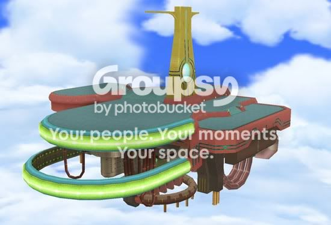
Saga 12
Reviving Pulse and Gaurdian of Heaven
การผจญภัยใน Titania นั้นเริ่มต้นด้วยปัญหาบางอย่างในโลกนี้ การตัดสินใจเพียงหนึ่งเดียวที่จะนำพาไปสู่การผจญภัย
และที่สิ่งสำคัญที่สุดนั้นก็คือ "เพื่อน" ที่จะช่วยแก้ปัญหานี้ได้
คำแนะนำจากมังกรที่จะทำให้มองเห็นเส้นทางใหม่
เส้นทางแห่งการค้นหาเพื่อช่วยเหลือมิตรสหายที่สาบสูญไป
การผจญภัยที่เริ่มขึ้นในโลกที่อยู่่ภายใต้อำนาจทั้งสาม
พลังในการก้าวสู้เส้นทางที่ยากลำบาก, ความรู้ในสิ่งเร้นลับที่ยากจะรู้ได้, บางสิ่งที่ได้จากการผจญภัย
แต่สิ่งที่ได้มายากเหนือกว่าสิ่งใดก็คือ "มิตรภาพระหว่างเพื่อน"
และในที่สุด "ป้อมปราการที่บินได้" ก็จะนำพาเราไปสู่เส้นทางแห่งการผจญภัย
มิตรภาพและการใช้พลังและความรู้ พวกเขาฉลาดหลักแหลมมาก และคุณอาจจะหลงทางในปราสาทลอยฟ้าได้
สาวน้อยที่หายสาบสูญไปในครานั้น จะเกิดสิ่งใหม่ที่น่าทึ่งขึ้นมา
ฟื้นคืนเสียงของจังหวะหัวใจให้กลับมาเต้นดังเดิมอีกครั้ง ที่จะก่อให้เกิดคลื่นใหม่ในโลกใบนี้ ภายในนามของผู้พิทักษ์แห่งท้องฟ้า ที่จะยังคงดำเนินเรื่องราวต่อไป
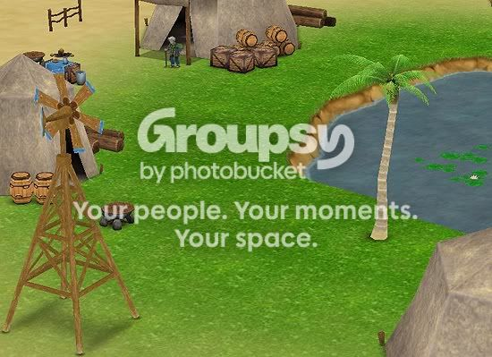
Saga 13
Lands for Groundbreaker (Part I)
หลังจากที่ปีกศักดิ์สิทธิ์ได้กลับคืนมา สันติภาพก็กลับคืนสู่โลกอีกครั้ง
ป้อมปราการนำทัพลอยฟ้าก็ถูกซ่อมแซมจนใช้ได้
แต่ก็ยังไม่สามารถบินข้ามผืนดินไป ณ อีกฟากฝั่ง
ช่วงเวลาแห่งความสงบสุขก็ไหลไปเรื่อยๆ
ช่วงเวลานั้น ไททาเนียดรากอนที่ถูกเพ่งเล็ง
ก็หนีไปซ่อนตัว ณ ดินแดนที่สาบสูญ หลับไหล
โลกไททาเนียที่หายไป [ECO ทาวน์]
ทั้งกำแพงกั้นระหว่างโลก ทั้งช่องว่างระหว่างมิติ อะไรบางอย่างที่สิ่งที่กำลังจะสลายไปสามารถทำได้
สายสัมพันธ์ของมนุษย์ ทางเดินของสิ่งไร้ตัวตนนำพาไปสู่ความรุ่งโรจน์
สุดปลายสายสัมพันธ์ มีการเริ่มต้นที่ไม่คาดฝันเกิดขึ้น
อีมิลดรากอน ณ ส่วนลึกในปากวาฬ
ดูเหมือนว่าเขากุมความลับอะไรบางอย่างอยู่
......และเมื่อความลับนั้นถูกล่วงรู้
ใครจะสามารถทะลวงไปสู่เบื้องหน้าของถนนสายนี้กัน?
อนาคตกำลังดำเนินไปอย่างช้าๆ
รอยร้าวบนผืนดินแยกออก รุ่งอรุณกำลังเริ่มขึ้น
Credits : ArikaSovia